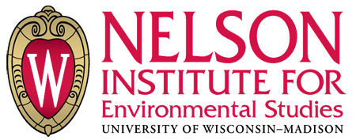

RESTAURANTS
Buffalo Wild Wings |
Capital Cafe |
Der Rathskeller |
Ginger Root |
Harvest Grain
Lakefront on Langdon |
Library Cafe and Bar |
Milio's |
QQ Express |
The Sett
Steenbock’s on Orchard |
Subway |
Slow Food Cafe |
Urban Slice
BADGER MARKETS AND CAFES
Badger Market in Biochemistry |
Badger Market in Health Sciences Learning Center
Badger Market in Ingraham |
Badger Market in Med Sciences |
Badger Market in School of Human Ecology
Badger Market in Union South |
Crossroads Cafe |
Daily Scoop at Union South
Daily Scoop at Memorial Union |
E2 - Engineering Eatery |
Feed Bag
Highland Grounds |
Microcosm Cafe |
Open Book Cafe
DINING HALLS
Carson's Market |
Elizabeth Waters Dining Room |
Four Lakes Market |
Frank Holt Center
Gordon Dining and Event Center |
Newell's Deli |
Rheta's Market
COFFEEHOUSES
Aldo's Cafe |
CoffeeBytes |
Peet’s Coffee & Tea at Grainger School of Business
Peet’s Coffee & Tea at Memorial Union |
Prairie Fire
OTHER
Babcock Hall Dairy Store |
F.H. King Handouts
Restaurants
Buffalo Wild Wings
Buffalo Wild Wings located on University Ave is a popular restaurant on campus. The main attraction is the wings and the 22 different sauces they offer. From sweet and mild to spicy hot, there are enough options to fulfill anyone’s cravings. Although they are known for their wings, they do offer a selection of vegetarian options such as the garden crasher, mozzarella sticks, nachos, potato wedges, soft pretzels, and a black bean burger. A local distributor in Wisconsin provides all of the food. Buffalo Wild Wings is very good at managing its waste as it composts all oil and grease and provides recycling to customers. All coffee options are fair trade. The restaurant also provides customers with reusable kitchenware for every meal. To learn more about their menu, check out their
website.
Capital Cafe
Capital Café is a great place to order lunch, with easy to-go options or sit down dining options. Their menu consists of sandwiches, soups, and salads. One of the highlights of Capital Café is they offer a good selection of vegetarian options with two delicious sandwiches, two soups, and all four salads. This café also provides composting bins for customers to sustainably dispose of their leftovers. These composting bins are appropriately labeled and easy to see. Come check out the menu in The Grainger School for Business and see how their sustainable practices.
Website
Der Rathskeller
Der Rathskeller is located on the first floor in the Memorial Union and offers true American food. Menu items include sandwiches/paninis, hamburgers, soups, and salads. This is a great place to eat and socialize. Each entree category contains a vegetarian item. Recycling is located within Der Rathskeller dining area. For more information about location hours and menu options, check out their
website .
Ginger Root
This pan-Asian restaurant can be accessed on the first floor of Union South. This location offers reusable dishware and silverware as well as eco-friendly to-go containers. Their selection includes classic entrees, rice, appetizers, and a variety of beverages. This restaurant offers two vegetarian options and local food products, including the soy sauce. Ginger Root also practices pre-consumer composting and provides recycling bins. This restaurant is located in close proximity to at least two composting bins in Union South. Ginger Root also participated in a study to determine their environmental impact by calculating their carbon footprint. For more information about location hours and menu options, check out their
website.
Harvest Grains
Harvest Grains, is a popular sandwich spot in Union South. Known for its flatbread sandwiches, salads, and sustainable menu options, Harvest Grains prides itself in offering local foods on their menu. The menu is 40% vegetarian. This is a great place to order a yummy vegetarian sandwich! The most popular vegetarian sandwich is the Farmer’s Market with grilled portabella mushrooms, hummus, and greens. Harvest Grains also practices pre-consumer composting and provides recycling and composting bins for consumer use. For more information on location hours and menu options, check out their
website.
Lakefront on Langdon
Lakefront on Langdon offers a variety of cuisines such as Asian, Mexican, American, a salad bar, and pizza. Their variety of menu options and view of Lake Mendota makes this place an ideal lunch spot. Menu variety ranges from vegetarian stir-fry from Thu’s fan dim, tacos from Taqueria del loco, or pizza from Urban Slice. Their customizable salad bar sets them apart from all other restaurants in the Unions. This location also provides recycling and composting bins. To read more of their menu selection and location hours, check out their
website.
Library Cafe and Bar
The Library Cafe and Bar is located on the corner of Campus Drive and N. Randall Avenue. The Library serves a variety of snacks, including many vegetarian options, and beverages, including fair trade coffee. There is a reusable mug discount for those who bring in their own coffee mug. Most of the food at this location is obtained locally, including burgers, breads, pesto, bacon, and cheese curds. All of their entrees and beverages are served on reusable plates and glasses. For more information about hours and menu options, check out their
website.
Milio’s
Conveniently located on East Campus Mall, Milio’s offers a number of delicious sandwiches, as well as chips, cookies, pickles, and soft drinks. They offer at least one vegetarian sandwich, though other seasonal sandwiches are offered. For more information about location hours and menu options, check out their
website.
QQ Express
Located on University Avenue, QQ Express is an asian restaurant for students on or near campus. They serve all the classic dishes: fried rice, lo mein, general tso’s, and more. In addition to their regular menu, they offer great lunch and dinner specials, allowing you to taste several dishes per visit. For more information about location hours and menu options, visit their
website.
The Sett
This restaurant can be accessed on the first floor and lower level of Union South. This location offers reusable dishware, silverware, glass goblets, and eco-friendly to-go containers. Their selection includes a variety of appetizers, burgers, brats, and a rare tap list. This restaurant offers a delicious vegetarian Black Bean Burger as well as the option of local Wisconsin cheddar cheese on several burgers. The Sett also practices pre-consumer composting and provides recycling and composting bins for consumer use. This location also offers live music, dancing, bowling, billiards, rock climbing, and the perfect place to watch your favorite sports. For more information about location hours and menu options, check out their
website.
Steenbock’s on Orchard
Located in the Wisconsin Institute for Discovery, one of the main focuses of this restaurant is incorporating local and sustainable food into their menu. Their menu changes seasonally to feature foods at the peak of their flavor. Additionally, they offer fairtrade coffee and use reusable kitchenware for meals. For more information about location hours and menu options, visit their
website.
Subway
Subway has two branches of this chain restaurant located on campus, which include the corner of University and Randall Avenue as well as the corner of Charter and Dayton Street. Always bustling between classes, Subway boasts a number of vegetarian sandwiches, flatizzas, and salads. For more information about location hours and menu options, check out their
website.
Slow Food Cafe
The Slow Food UW Cafe is located at the Crossing on University Avenue. This location is a student run, non-profit organization offering a weekly dining experience every Wednesday from 11:30am-2pm at the Crossing as well as a weekly dinner. The Slow Food Cafe is a great place to find locally sourced, sustainable food on campus at affordable prices. For more information, check out their
website.
Urban Slice
This restaurant can be accessed on the first floor of Union South. This location offers reusable silverware and eco-friendly to-go containers. Their menu selection includes a variety of pizza toppings, salads, and beverages. This restaurant offers delicious New York Style pizza by the slice, the whole, or even personal-sized gluten-free pizzas. Urban Slice also provides recycling bins and practices pre-consumer composting. This restaurant is also located in close proximity to at least two composting bins in Union South. The gigantic pizzas at Urban Slice are also offered at the Memorial Union’s Lakefront on Langdon. For more information about location hours and menu options, check out their
website.
Badger Markets & Cafés
Badger Market in Biochemistry
Badger Markets offer a variety of to-go goods options that satisfy one’s appetite. This location can be accessed through the Henry Mall entrance. Their selection ranges from sandwiches, soups, pastries, salads, and a variety of drinks. Badger Markets always offer at least one vegetarian option, and all of their coffee options are fairtrade. Some sustainable aspects of the Badger Markets include providing recycling bins and offering discounts for reusable mugs. Customers may also buy reusable mugs on location. All Badger Markets compost their used coffee beans. Check out the 13 Badger Markets/Cafés around campus! For more information about location hours and menu options, check out their
website.
Badger Market in Health Sciences Learning Center
Badger Markets offer a variety of to-go goods options that satisfy one’s appetite. This location can be accessed on the first floor of the commons area in the Health Sciences Learning Center. Their selection ranges from sandwiches, soups, pastries, salads, and a variety of drinks. Badger Markets always offer at least one vegetarian option, and all of their coffee options are fairtrade. Some sustainable aspects of the Badger Markets include providing recycling bins and offering discounts for reusable mugs. Customers may also buy reusable mugs on location. All Badger Markets compost their used coffee beans. Check out the 13 Badger Markets/Cafés around campus! For more information about location hours and menu options, check out their
website.
Badger Market in Ingraham
Badger Markets offer a variety of to-go goods options that satisfy one’s appetite. This location can be accessed on the first floor of Ingraham. Their selection ranges from sandwiches, soups, pastries, salads, and a variety of drinks. Badger Markets always offer at least one vegetarian option, and all of their coffee options are fairtrade. Some sustainable aspects of the Badger Markets include providing recycling bins and offering discounts for reusable mugs. Customers may also buy reusable mugs on location. All Badger Markets compost their used coffee beans. Check out the 13 Badger Markets/Cafés around campus! For more information about location hours and menu options, check out their
website.
Badger Market in Medical Sciences
Badger Markets offer a variety of to-go goods options that satisfy one’s appetite. This location can be accessed through the Charter Street entrance. Their selection ranges from sandwiches, soups, pastries, salads, and a variety of drinks. Badger Markets always offer at least one vegetarian option, and all of their coffee options are fairtrade. Some sustainable aspects of the Badger Markets include providing recycling bins and offering discounts for reusable mugs. Customers may also buy reusable mugs on location. All Badger Markets compost their used coffee beans. Check out the 13 Badger Markets/Cafés around campus! For more information about location hours and menu options, check out their
website.
Badger Market in the School of Human Ecology Building
Badger Markets offer a variety of to-go goods options that satisfy one’s appetite. This location can be accessed at Nancy Nicholas Hall in the School of Human Ecology Building. Their selection ranges from sandwiches, soups, pastries, salads, and a variety of drinks. Badger Markets always offer at least one vegetarian option, and all of their coffee options are fairtrade. Some sustainable aspects of the Badger Markets include providing recycling bins and offering discounts for reusable mugs. Customers may also buy reusable mugs on location. All Badger Markets compost their used coffee beans. For more information about location hours and menu options, check out their
website.
Badger Market in Union South
Badger Markets offer a variety of to-go goods options that satisfy one’s appetite. This location can be accessed on the first floor on the west end of Union South. Their selection ranges from sandwiches, soups, pastries, salads, and a variety of drinks. Badger Markets always offer at least one vegetarian option, and all of their coffee options are fairtrade. Some sustainable aspects of the Badger Markets include providing recycling bins and offering discounts for reusable mugs. This restaurant is also located in close proximity to at least two composting bins in Union South. Customers may also buy reusable mugs on location. All Badger Markets compost their used coffee beans. Check out the 13 Badger Markets/Cafés around campus! For more information about location hours and menu options, check out their
website.
Crossroads Café
The Café offers a variety of to-go goods in eco-friendly containers that satisfy one’s appetite. This location can be accessed on the first floor of the School of Education Building. Their selection ranges from sandwiches, soups, pastries, salads, and a variety of drinks. This Café offers at least one vegetarian option and all coffee options are fairtrade. Some sustainable aspects of the café include providing recycling bins and offering discounts for reusable mugs. Customers may also buy reusable mugs on location and rest assured the café composts their used coffee beans. Check out the 13 Badger Markets/Cafés around campus!For more information about location hours and menu options, check out their
website.
Daily Scoop (at Memorial Union)
This location can be accessed on the first floor of Memorial Union. This location offers eco-friendly to-go containers as well as sandwiches, soups, baked goods, salads, and beverages. Their menu selection also includes a delicious variety of locally baked cookies and delicious ice cream from UW-Madison’s own Babcock Dairy. This location is located near communal recycling bins and practices pre-consumer composting. A smaller Daily Scoop location can be found on the first floor of Union South. For more information about location hours and menu options, check out their
website.
Daily Scoop (at Union South)
This location can be accessed on the first floor of Union South. The Daily Scoop offers eco-friendly to-go containers. Their menu selection includes a delicious variety of locally baked cookies and ice cream from UW-Madison’s own Babcock Dairy. This restaurant offers delicious Babcock ice cream in cups or cones. This location practices pre-consumer composting and is located near Union South’s communal recycling and composting bins. A larger Daily Scoop location can also be found on the first floor at the Memorial Union. For more information about location hours and menu options, check out their
website.
E^2 - Engineering Eatery
E^2 offers a variety of to-go goods options that satisfy one’s appetite. This location can be accessed on the first floor Student Learning Center in Engineering Hall. Their selection ranges from sandwiches, soups, pastries, salads, and a variety of drinks. This eatery offers at least one vegetarian option and all coffee options are fairtrade. Some sustainable aspects of this location include providing recycling bins and offering discounts for reusable mugs. Customers may also buy reusable mugs on location and rest assured this location composts their used coffee beans. Check out the 13 Badger Markets/Cafés around campus! For more information about location hours and menu options, check out their
website.
Feed Bag
E^2 offers a variety of to-
This eatery offers a variety of to-go goods options that satisfy one’s appetite. This location can be accessed on the second floor of the School of Veterinary Medicine. Their selection ranges from sandwiches, soups, pastries, salads, and a variety of drinks. This eatery offers at least one vegetarian option and all coffee options are fairtrade. Some sustainable aspects of this location include providing recycling bins and offering discounts for reusable mugs. Customers may also buy reusable mugs on location and rest assured this location composts their used coffee beans. Check out the 13 Badger Markets/Cafés around campus! For more information about location hours and menu options, check out their
website.
Highland Grounds
This eatery offers a variety of to-go goods options that satisfy one’s appetite. This location can be accessed on the first floor of the Waisman Center. Their selection ranges from fresh bakery items, yogurt parfaits, fresh fruit, and a variety of drinks. This eatery offers at least one vegetarian option and all coffee options are fairtrade. Some sustainable aspects of this location include providing recycling bins and offering discounts for reusable mugs. Customers may also buy reusable mugs on location and rest assured this location composts their used coffee beans. Check out the 13 Badger Markets/Cafés around campus! For more information about location hours and menu options, check out their
website.
Microcosm Cafe
This eatery offers a variety of to-go goods options that satisfy one’s appetite. This location can be accessed in the north atrium of the Microbial Sciences Building. Their selection ranges from sandwiches, soups, pastries, salads, and a variety of drinks. This eatery offers at least one vegetarian option and all coffee options are fairtrade. Some sustainable aspects of this location include providing recycling bins and offering discounts for reusable mugs. Customers may also buy reusable mugs on location and rest assured this eatery composts their used coffee beans. Check out the 13 Badger Markets/Cafés around campus! For more information about location hours and menu options, check out their
website.
Open Book Cafe
The Café offers a variety of to-go goods in eco-friendly containers to satisfy one’s appetite. This location can be accessed on the first floor of Helen C. White Hall, also known as College Library. Their selection ranges from sandwiches, soups, pastries, salads, and a variety of drinks. This Café offers at least one vegetarian option and all coffee options are fairtrade. Some sustainable aspects of the café include providing recycling bins and offering discounts for reusable mugs. Customers may also buy reusable mugs on location and this eatery composts their used coffee beans. Check out the 13 Badger Markets/Cafés around campus! For more information about location hours and menu options, check out their
website.
Dining Halls
Carson’s Market
Carson’s market, located in Carson Gulley Center, offers a wide variety of options for students, and is especially convenient for those living in the lakeshore area. Much of their food is sourced locally, including baked goods and Babcock dairy products. They have many create-your-own options, opening the possibilities for vegetarian and vegan meals. In general, at least a couple meals per day at Carson’s would be considered vegan. Carson’s participates in both pre- and post-consumer composting of food waste, and recycling bins are available for student use. In addition, they offer reusable plates, silverware, and cups to reduce waste. Fairtrade coffee is available, and students who bring in their own mug will receive a discount on their coffee purchases. For more information about location hours and menu options, check out their
website.
Elizabeth Waters Dining Room
Elizabeth Waters Dining Room is located in the Elizabeth Waters residence hall, offering convenient food for students living in the area, as well as those with classes in the area. Food areas include 1849, Buckingham Bakery, Delicious, Global Kitchen, and Great Greens. Liz Waters has reusable plates, silverware, and cups, which cut back on waste produced. They participate in both pre- and post - consumer composting, and have recycling bins available for student use. Generally you will be able to find a couple vegetarian options here in addition to the excellent salad bar. Liz Waters serves fair trade coffee, and offers a reusable mug discount. For more information about location hours and menu options, check out their
website.
Four Lakes Market
Four Lakes Market is located in the first floor of Dejope residence hall, and has a very wide variety of foods to choose from on a daily basis. Food areas include 1849, the Bean and Creamery, Buona Cucina, Delicious, Fired Up, Flamingo Run, Global Kitchen, Great Greens, and Maki-Mono & Noodles. Within these areas are housemade soups, fresh greens, sandwiches, and much more. Coffee offered at the Bean and Creamery is fairtrade, and customers can receive a discount for bringing in their own mug. Burgers offered at Four Lakes are all grass-fed beef. The Four Lakes Market participates in both pre- and post-consumer composting and has recycling bins available for use. For more information about location hours and menu options, check out their
website.
Frank Holt Center
TThe Bean and Creamery at the Frank Holt Center is located on the ground floor, directly across from Dejope Hall. The Bean and Creamery serves ice cream and coffee. The ice cream is locally sourced from Babcock Dairy and the coffee is fairtrade. With the use of a personal travel mug, one will receive a 10 cent discount with a coffee purchase. A recycling bin can be found right on site. One key sustainability feature at the Frank Holt Center is their extensive recycling receptacle for plastic bags, ink cartridges, and batteries. Check out their location hours on the University Housing dining
website.
Gordon Commons
Gordon Commons’ newly renovated dining facility has made the dining experience for students much more sustainable. Not only is their menu more accommodating to vegetarians with their large salad bar, but each different food station provides at least one vegetarian option. Food areas include 1849, the Bean and Creamery, Buona Cucina, Delicious, Fired Up, Flamingo Run, Global Kitchen, Great Greens, and Maki-Mono & Noodles. Within these areas are housemade soups, fresh greens, sandwiches, and much more. They are especially known for their GRASS-FED BURGERS! Coffee offered at the Bean and Creamery is fair trade, and customers can receive a discount for bringing in their own mug. Gordon Commons participates in both pre- and post-consumer composting and has recycling bins available. For more information about location hours and menu options, check out their
website.
Newell’s Deli
Newell’s Deli is located on the first floor of the Newell’s Smith Dormitory. Newell’s is your one-stop shop for lunch, dinner dessert, coffee, and groceries. Newell’s offers a range of options such as a salad bar, soups, 14 different sandwiches, hot entrees, ice cream, and a variety of to-go items. Their two different types of coffee are fair trade, and customers are offered a discount when utilizing their own personal mug or purchased travel mug. There are a variety of vegetarian options which include four different sandwiches, hot entrees, two soups, and a self-serve salad bar. UW Housing includes local food into Newell’s with their fresh produce, bread, cheese, and hot meals. One of the greatest features at Newell’s is their composting, where workers compost for the students by collecting their trays and separating their leftover food. Recycling bins can also be found within the eatery. Newell’s also provides reusable kitchenware for students eating in the dining area. For more information check out their
website.
Rheta’s Market
Rheta’s Market is located on the first floor of Chadbourne Residence Hall and provides a variety of foods to choose from on a daily basis. Food areas include the market, Flamingo Run, the Bean and Creamery, and Capital City Pizza Delivery. Within these areas are housemade soups, fresh greens, sandwiches, and much more. Dairy products are sourced locally at UW-Madison’s own Babcock Dairy, and almost all cheeses offered are locally produced. The menu selection also includes grass-fed beef products, and the marinara sauce is made in central production using locally grown tomatoes and basil. Coffee offered at the Bean and Creamery is Fairtrade, and customers will receive a discount for bringing their own mug. Rheta’s Market practices both pre-consumer and post-consumer composting and has recycling bins available. For more information about location hours and menu options, check out their
website.
Coffeehouses
Aldo’s Cafe
This location can be accessed in the north atrium of the Wisconsin Institute for Discovery building. Their selection includes organic teas and some fair trade teas and coffees. This eatery offers local products such as milk and cheese. Some sustainable aspects of this location include providing recycling bins and offering discounts for reusable mugs. Customers may also utilize reusable stirring spoons and rest assured pre-consumer composting is implemented on used coffee beans. For more information about location hours and menu options, check out their
website.
CoffeeBytes
CoffeeBytes is an independently owned coffeehouse run by two UW-Madison alumni. Located in an area of high foot traffic along University Avenue, their unique atmosphere and prime location bring in a variety of customers. CoffeeBytes is known for its delicious fairtrade and organic coffee with its locally sourced milk. The variety of healthy sandwiches/wraps and breakfast items they provide include over 65% vegetarian options. CoffeeBytes works with local vendors to supply all of their products with 25% coming from local producers in Wisconsin. One quality that separates CoffeeBytes from most coffeehouses is the availability of reusable kitchenware. For customers dining in, they offer reusable silverware and dishware. All diners will receive a refill costing only $1 and use of one’s personal mug allows for a $0.25 discount. For more information, check out CoffeeBytes’
website.
Peet’s Coffee & Tea (at Grainger School of Business)
Peet’s is located on the first floor of the Grainger School of Business next to the Capital Café. Their selection includes tea, espresso, and coffee. Not only do they have great specialty drinks, they supply fair trade coffee. In addition, you can try some of their locally sourced bakery goods and bagels. Some sustainable aspects of this location include providing recycling bins and composting their coffee beans. One great quality is their 10 cent discount for using your personal mug. For more information about location hours and menu options, check out their
website.
Peet’s Coffee & Tea (at Memorial Union)
Peet’s is located on the first floor of Memorial Union. Their selection includes tea, espresso and coffee. Not only do they have great specialty drinks, they supply fairtrade coffee. In addition, you can try some of their locally sourced bakery goods and bagels. Some sustainable aspects of this location include providing recycling bins and composting their coffee beans. One great quality is their 10 cent discount for using your personal mug. For more information about location hours and menu options, check out their
website.
Prairie Fire
This location is a coffeehouse and wine bar that can be accessed on the first floor of Union South. Their wine selection includes a variety of local, international, and organic wines. This eatery offers a variety of delicious tapas, which are half-priced on Thursdays from 5-9pm, and these appetizers are perfect for enjoying with a glass of wine and some friends. Prairie Fire uses local dairy products and provides several vegetarian options for their tapas. Some sustainable aspects of this location include close proximity to communal recycling and composting bins at Union South and offering discounts for reusable mugs. Customers may also utilize reusable silverware, dishware, cups and wine glasses, and we can rest assured this location composts their used coffee beans. For more information about location hours and menu options, check out their
website.
Other
Babcock Hall Dairy Store
The Babcock Hall Dairy Plant and Store locally produce dairy products for the university and community. A variety of these dairy products are supplied to the Residential Dining Halls, Unions, and Badger Markets/Cafes. These locally produced products include a flavorful variety of ice creams, milks, and award-winning cheeses. Ice cream can be purchased by the pint, scround (1.75 quarts) or a three-gallon tub. The store offers breakfast options such as pastries, breakfast sandwiches, and fair trade coffee. For lunch, the store offers signature toasted sandwiches and a soup of the day, with a few vegetarian options available. This location also provides recycling bins and a discount for using a personal mug. For more information about location hours and menu options, check out their
website.
F.H. King Handouts
Every Friday at 1:00PM from June to October, you can find F.H. King volunteers distributing locally grown produce to students and UW-Madison community members on East Campus Mall. This opportunity provides campus with a variety of seasonal produce...for free! For more information, check out their
website.

These eateries were evaluated by a UW Nelson Institute for Environmental Studies
capstone group during the Spring 2014 semester.